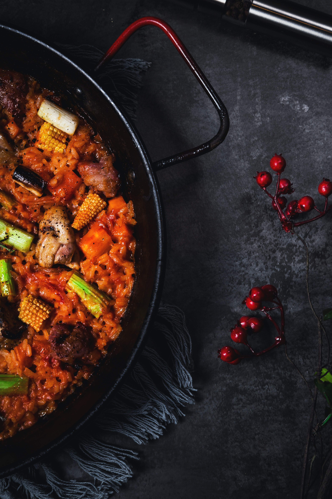
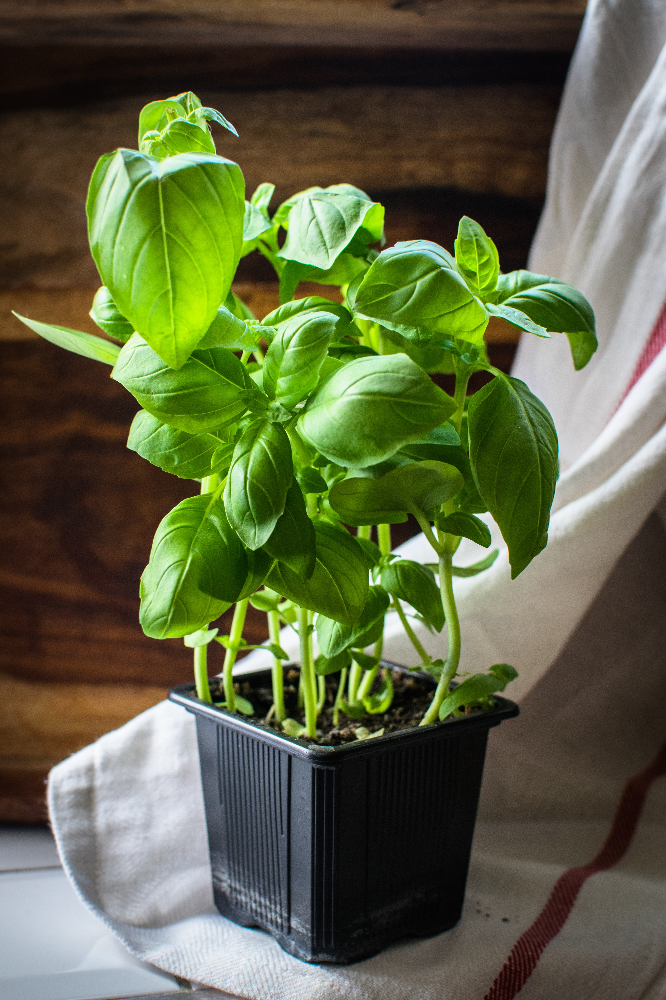
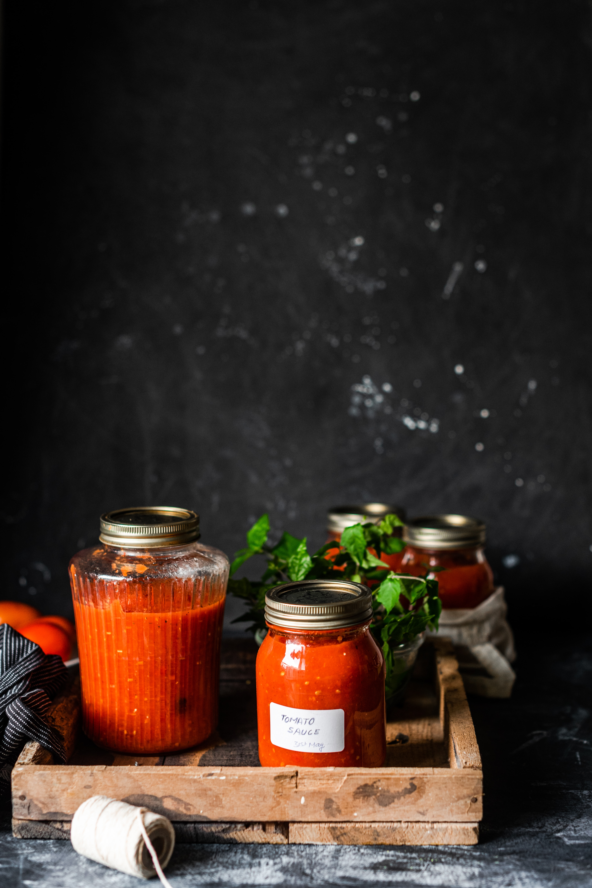
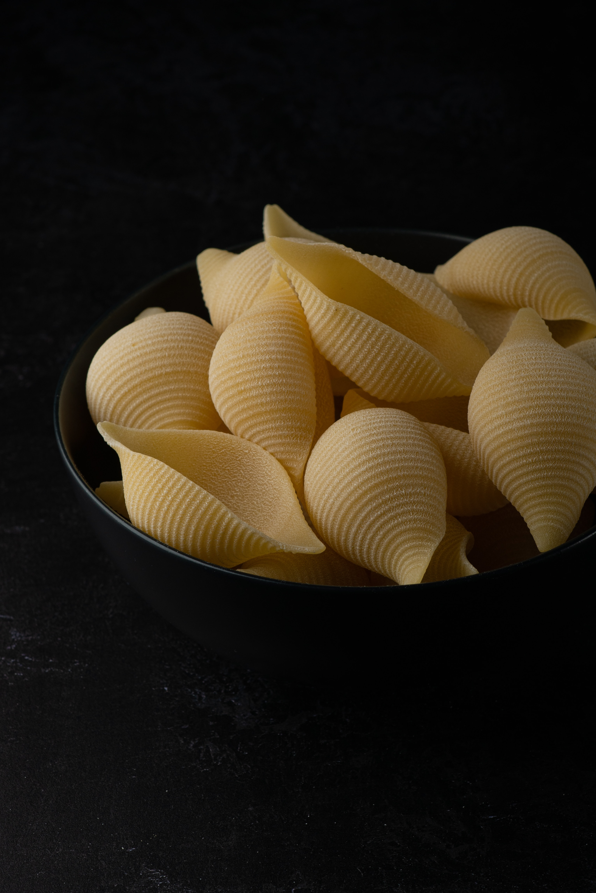
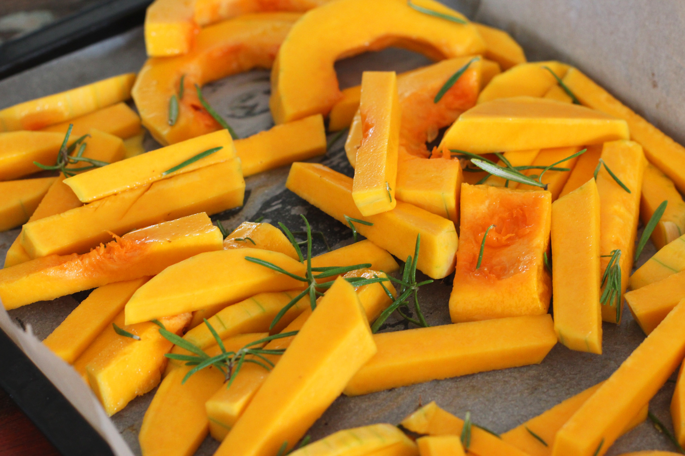

Sheet Pan Caprese Chicken
Origin: American Source: Food Network Category: Dinner Juicy roasted tomatoes and cheesy chicken breasts get a hint of brightness from fresh basil and a balsamic reduction.
- Olive oil
- Italian seasoning
- Kosher salt and freshly groun black pepper
- Cherry tomatoes
- Chicken breasts
- Balsamic vinegar
- Mozzarella
- Basil
Recipe Steps
- Preheat the oven to 400 degrees F. Drizzle 1 tablespoon of oil onto a rimmed baking sheet and use your fingers to evenly spread it out and coat the bottom of the pan. Sprinkle with the Italian seasoning, 1 tablespoon salt and a few grinds of pepper. Scatter the cherry tomatoes on the baking sheet and shake it back and forth so they become evenly coated in the oil and seasoning. Arrange the chicken in the center of the baking sheet, pushing the tomatoes out to the perimeter, and drizzle the chicken with the remaining tablespoon of oil.
- Bake until the tomatoes are soft, blistered and begin to burst, 20 to 25 minutes.
- Meanwhile, add the vinegar to a small saucepan and bring to a boil over medium-high heat. Lower the heat to medium and simmer until the vinegar has reduced by half and is thick enough to coat back of the spoon, 7 to 8 minutes.
- Remove the baking sheet from the oven and drape a slice of mozzarella over each chicken breast. Bake until the cheese melts and an instant-read thermometer inserted into the thickest part of the breast has reached 160 degrees F, 5 to 7 minutes (the chicken will carryover cook to 165 F).
- Sprinkle the chicken and tomatoes with the basil and drizzle with the balsamic reduction. Spoon the collected pan juices over the tomatoes and chicken. Serve on a bed of arugula and with crusty bread to mop up the pan juices.
Additional Food Images



Butternut Squash-Stuffed Shells
Origin: American Source: Food Network Category: Dinner
These stuffed shells are packed with a spicy spinach and ricotta filling and nestled in a cozy roasted butternut Alfredo sauce.
- Butternut squash
- Shallot
- Garlic
- Olive oil
- Thyme
- Sage
- Salt and ground black peper
- Jumbo pasta shells
- Vegetable broth
- Spinach
- Cream cheese
- Ricotta
- Red pepper flakes
- Parmesan
- Heavy cream
- Butter
- Nutmeg
- Mozzarella
Recipe Steps
- Preheat the oven to 425 degrees F.
- Add the squash, shallot and garlic to a baking sheet. Drizzle with the olive oil and toss to combine. Sprinkle with the thyme, sage, 1/4 teaspoon salt and a few grinds of black pepper and toss again. Roast until the squash is tender and light golden, about 30 minutes. Let cool.
- Meanwhile, bring a large pot of water to a boil; add salt. Add the pasta shells and cook until al dente according to the package directions. Drain and let cool.
- Squeeze the roasted garlic into a small food processor or blender, add the squash, shallot and vegetable broth and puree until smooth.
- Mix together the spinach, cream cheese, ricotta, red pepper flakes, 2/3 cup of the Parmesan and 1 tablespoon salt in a large bowl. Stuff about 2 tablespoons of the spinach mixture into each shell; set aside.
- Add the pureed squash mixture, heavy cream and butter to a large skillet over medium heat. Cook, whisking frequently, until thickened, about 5 minutes. Remove from the heat and whisk in the nutmeg, 1 1/2 teaspoons salt and the remaining 1 1/3 cups Parmesan.
- Spread the cheese sauce into the bottom of a 9-by-13-inch baking dish. Arrange the stuffed shells in the baking dish seam-side up, shingling them so they all fit (you should have 5 shells along the short side and 6 shells along the long side). Top with the mozzarella. Bake until the cheese is melted and bubbling, 15 to 20 minutes. Top with more Parmesan and sage before serving.
Additional Food Images


.jpg)
Fried Rice
Origin: Asian Source: My Mom Category: Dinner
Easy to make fried rice to feed the family
- Rice (Preferably day old)
- Egg
- Olive oil
- Salt and ground black pepper
- Butter
- Protein of choice
- Garlic
- Green onion
- Soy sauce
- Hot sauce (Optional)
Recipe Steps
- In a pan, or wok, scramble your eggs until they are almost finished and remove
- Then heat the rice in the pan alongside your protein of choice, season with salt and pepper, and add a tablespoon of garlic powder
- Once the protein begins to brown add the soy sauce, mixing well with the rice, then add back in the egg as well as the green onions
- Once it is all well incorporated add in the butter for a nice shine, plate up with the optional hot sauce and enjoy!
Additional Food Images